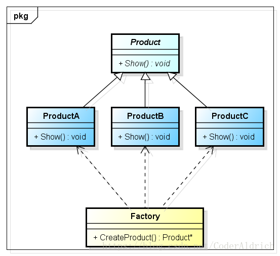
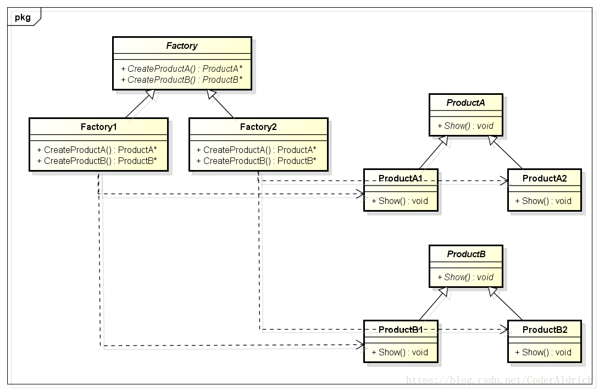
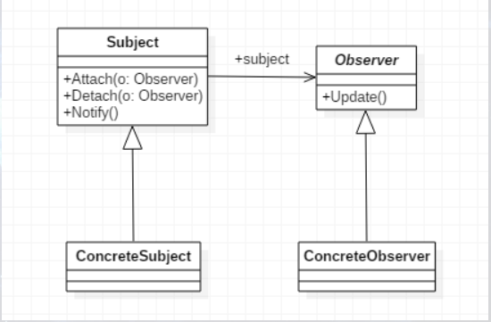

面向对象基本概念
- 三大特性：封装-继承-多态
- 一些相关的重要概念：抽象-组合-动态绑定-消息传递
设计模式
由面向对象基本特性得来的设计模式包括三类23种，如下所示：
设计原则
- OCP-开放封闭原则：开放扩展，封装更改
- LSP-里氏代换原则：子类必须能够替换其父类
- DIP-依赖倒转原则：抽象不应依赖细节，细节应依赖抽象（面向接口）
- ISP-接口隔离原则：一个类对另外一个类的依赖应当建立在最小的接口上
- CARP-合成/聚合复用原则：尽量使用合成/聚合，尽量不要使用继承（因继承是强偶合）
- LoD-迪米特法则：若两个类不必直接通信，则不应直接交互。成员该私有要私有
- SRP-单一职责原则：就一个类而言，应该仅有一个引起它变化的原因
A．创建型模式
1. 工厂方法模式（虚拟构造子模式/多态性工厂模式）

定义一个创建实例对象的工厂接口，将实际创建工作推迟到子类中。2. 抽象工厂模式

最为抽象最具一般性，向客户端提供一个接口，使客户端在不必指定实例的具体类型的情况下创建多个实例族的实例对象。3. 单例模式
单例模式一般是用来让整个进程只有一个，一般是管理类。进程只有一个，再多线程情况下就需要考虑线程安全。常见的单例模式一般分为懒汉模式和饿汉模式。
懒汉模式
顾名思义，懒，就是用的时候才建立，不用不建立。
饿汉模式
开场就饿，进程开始就创建
4. 建造者模式
- 将复杂对象的构建与其表示分开，使同样的构建过程可以创建不同的表示。
- 转一个特别形象的描述
简单地说，就好象我要一座房子住，可是我不知道怎么盖（简单的砌墙，层次较低），也不知道怎么样设计（建几个房间，几个门好看，层次较高），于是我需要找一帮民工，他们会砌墙，还得找个设计师，他知道怎么设计，我还要确保民工听设计师的领导，而设计师本身也不干活，光是下命令，这里砌一堵墙，这里砌一扇门，这样民工开始建设，最后，我可以向民工要房子了。在这个过程中，设计师是什么也没有，除了他在脑子里的设计和命令，所以要房子也是跟民工要，记住了！
5. 原型模式
用原型实例指定创建对象的种类，并且通过拷贝这些原型创建新的对象
B．结构型模式
6. 适配器模式
为接口提供缺省实现以供扩展。使得子类只需覆盖这个缺省实现的个别方法，而无须去实现中的每个方法。JDK1.8中了提供了为接口添加默认实现的新特性
7. 组合（部分-整体）模式
将对象组合成树形结构以表示“部分-整体”的层次结构
8. 装饰器模式
动态给对象添加额外职责，比通过生成子类来增加功能更加灵活
9. 代理模式
提供代理以控制对原对象的访问。关键：代理与原对象共用一个接口
10. 享元模式
运用共享技术有效地支持大量的细粒度对象
11. 外观（门面）模式
为一组接口提供一个一致的接口，体现了DIP和LoD原则
12. 桥接模式
将抽象部分与其实现部分分离，使它们都可以独立变化，可实现多角度分类
C．行为型模式
13. 策略模式
定义一系列形式相同实现不同的算法，减少耦合，封装变化
14. 模板方法模式
定义一个操作中算法的骨架，而将一些具体步骤延迟到子类
15. 观察者模式(发布-订阅模式)
定义一种一对多的依赖关系，让多个观察者对象同时监听某一个通知者对象

16. 迭代器模式
提供顺序访问一个聚合中元素的方法。不常用，因为语言本身已内置
17. 职责链模式
使多个对象都有机会获得机会处理请求。这些对象连成一条链。减少请求得与接收者的耦合。如过滤器
18. 命令模式
将请求封装成一个对象，以使你可用不同的请求对客户端进行参数化；可对请求进行排除、记录日志、或撤销操作
19. 备忘录模式
在不破坏封装的前提下捕获一个对象的内部状态，并在该对象外部保存此状态
20. 状态模式
当一个状态改变时，允许改变其行为，看其来像是改变了其类。（将复杂的条件判断转移到多个小类中）
21. 访问者模式
表示一个作用于某对象结构中的各元素的操作。把数据处理与数据结构分开
22. 解释器模式
对一个语言定义一个文法的表示，并定义一个解释器，来解释语言中的句子，如正则表达式，浏览器。通过解释执行
23. 中介者(调停者)模式
用一个中介对象来封装一系列的对象交互。应用于星形结构的对象关系中